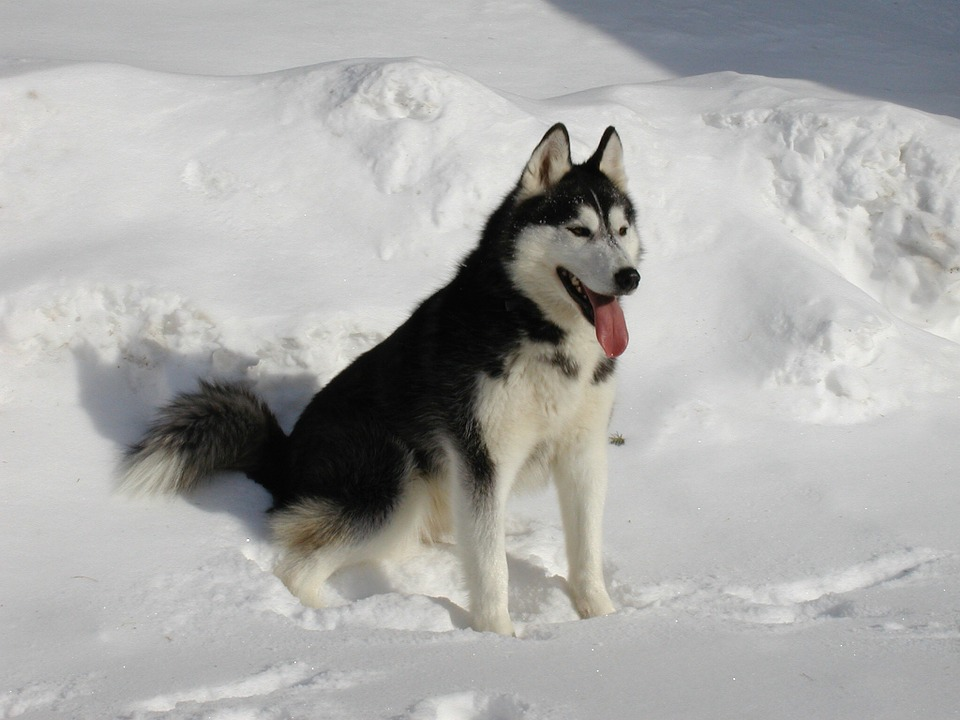

 This is a siberian husky. one of the most loyal and fun loving dog breeds out there. ive had three husky so far in my life but sadly ive never been able to keep any of them longer than a year. Back To Home Page